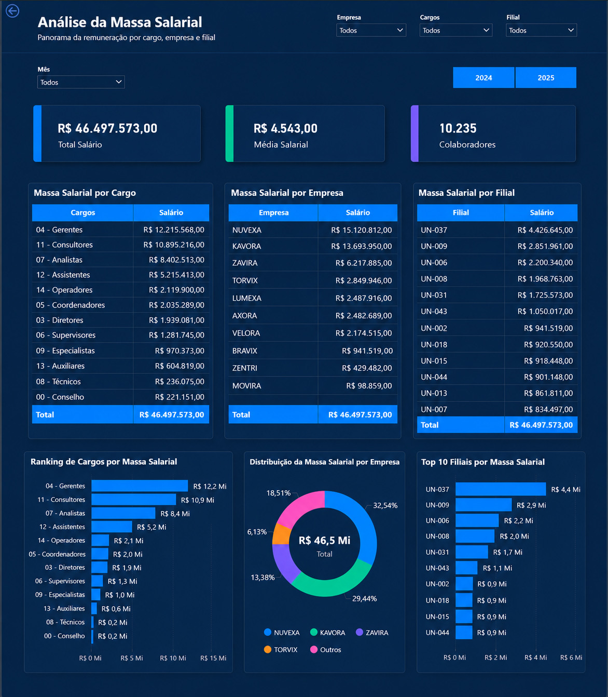
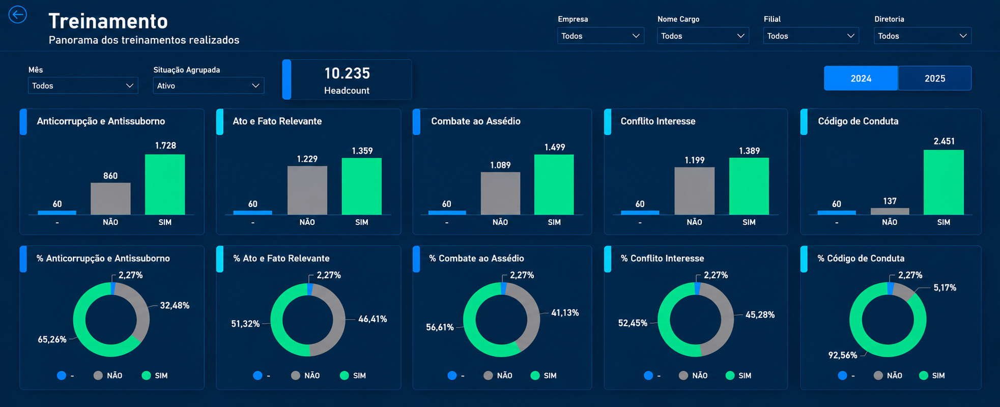

Objetivo da análise
Reunir indicadores dispersos em uma visão gerencial para facilitar o acompanhamento da estrutura de pessoas e a comparação entre recortes organizacionais.
Painel de People Analytics voltado ao acompanhamento de indicadores de gestão de pessoas, com visões complementares sobre composição do quadro, movimentações, custos e desenvolvimento dos colaboradores.
Objetivo, organização das informações e principais leituras disponíveis no painel.
Reunir indicadores dispersos em uma visão gerencial para facilitar o acompanhamento da estrutura de pessoas e a comparação entre recortes organizacionais.
Estruturação de informações de colaboradores e indicadores de RH para apresentação consolidada no dashboard. As telas disponíveis não documentam a fonte original nem todas as etapas de preparação.
Organização de visões analíticas e indicadores no Power BI, com foco em leitura por perfil, evolução do quadro e acompanhamento de métricas de gestão de pessoas.
Os indicadores ajudam a localizar mudanças no quadro, diferenças de composição e áreas que demandam acompanhamento de custos ou iniciativas de desenvolvimento.


